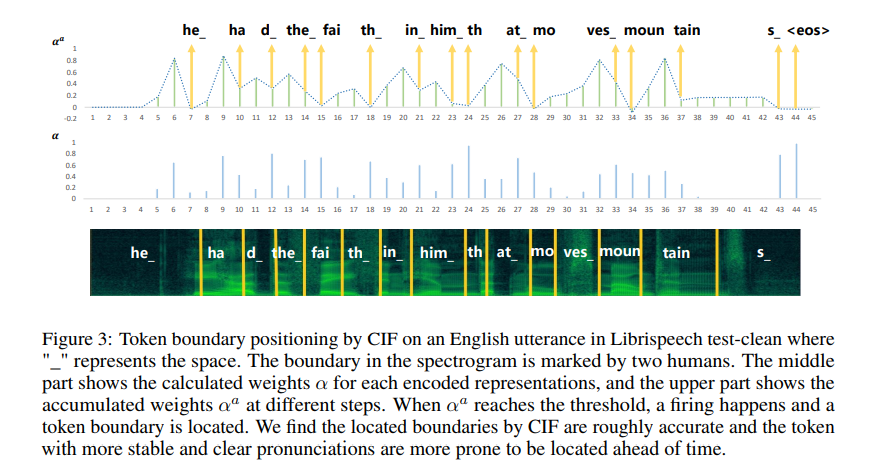
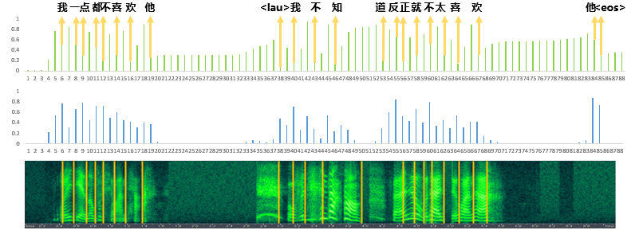
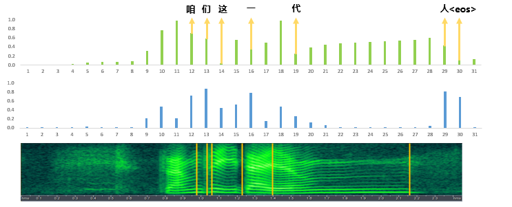

Authors: Linhao Dong, Bo Xu
Abstract: In this paper, we propose a novel soft and monotonic alignment mechanism used for sequence transduction. It is inspired by the integrate-and-fire model in spiking neural networks and employed in the encoder-decoder framework consists of continuous functions, thus being named as: Continuous Integrate-and-Fire (CIF). Applied to the ASR task, CIF not only shows a concise calculation, but also supports online recognition and acoustic boundary positioning, thus suitable for various ASR scenarios. Several support strategies are also proposed to alleviate the unique problems of CIF-based model. With the joint action of these methods, the CIF-based model shows competitive performance. Notably, it achieves a word error rate (WER) of 2.86% on the test-clean of Librispeech and creates new state-of-the-art result on Mandarin telephone ASR benchmark.
Alignment (or boundary positioning) figures for utterances on Librispeech test-clean:
1089-134686-0035.wav:
alignment figure of 1089-134686-0035.wav:
Alignment (or boundary positioning) figures for utterances on HKUST:
20041028_124231_A013309_B013310-B-009906-010600.wav:
alignment figure of 20041028_124231_A013309_B013310-B-009906-010600.wav:
20041028_124231_A013309_B013310-B-044774-045019.wav:
alignment figure of 20041028_124231_A013309_B013310-B-044774-045019.wav:
more alignment figures are preparing...